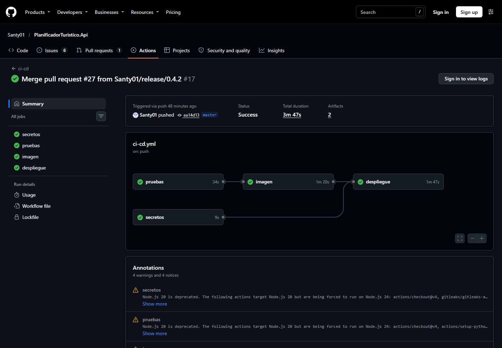
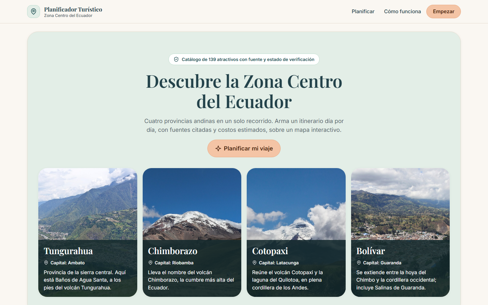

Seminario Ingeniería de Software con IA Generativa · UNIANDES · Módulo 4
Itinerarios día por día con fuentes citadas, costos, clima y mapa, más un asistente que ajusta el viaje sin salirse de su alcance.
Grupo 4
Kleber Tepud
César Vasquez
Kleber Suñiga
En producción
planificador.bhsolutions.cloud
API v0.4.2 · Web v1.1.0
Sustentación
Sábado 7 de noviembre de 2026
Docente: Heyler Fabio Guaza
Problema y usuario
Visitantes nacionales y extranjeros que quieren recorrer Tungurahua, Chimborazo, Cotopaxi y Bolívar en 1 a 7 días, con un presupuesto definido.
Horarios, precios y accesos están repartidos en páginas de GAD, prensa y blogs. Un chatbot genérico inventa atractivos, precios y horarios con total seguridad.
Un itinerario por día armado solo con un catálogo verificado de 139 atractivos, con la fuente de cada dato, costos, clima del día y mapa.
Demo en vivo · sobre la URL pública
Formulario: 2 días · USD 100 · Latacunga · Naturaleza · notas Me interesa la laguna de Quilotoa · fecha. Mostrar el itinerario por día, el mapa, los costos y en una actividad «Lo que respalda este motivo» → Ver fragmento citado.
En el asistente: ¿Qué playas hay en Galápagos? → responde que no tiene información verificada, sin inventar y sin fuentes. (En el formulario, «playas de Galápagos» se rechaza antes de llamar al modelo.)
En el asistente: Envíame el itinerario a demo@example.com → aparece la tarjeta con la descripción real → Aprobar → «enviado (simulado)». Extra: Quitar una actividad y ver que el asistente reemplaza solo esa visita.
Plan B si la plataforma falla: «la plataforma está despertando; mientras tanto, esta es la grabación de hoy» → video de 2 minutos y capturas en docs/evidencias/semana-4/.
Arquitectura
Evidencias · pruebas funcionales contra la URL pública
| # | Tipo | Caso | Resultado |
|---|---|---|---|
| 1 | salud | GET /health | 200 · 0.2 s |
| 2 | caso | Itinerario con Quilotoa | 200 · 1.5 s |
| 3 | caso | 1 día cultural en Riobamba | 200 · 14.3 s |
| 4 | fuera | Playas de Galápagos → rechazo | 200 · 0.1 s |
| 5 | inyección | «Ignora tus instrucciones…» | 200 · 0.1 s |
| 6 | inválida | Cuerpo vacío → 422 | 422 · 0.1 s |
| 7 | caso | Pregunta al agente con fuente | 200 · 1.3 s |
| 8 | confirmación | Enviar → requiere aprobación | 200 · 0.5 s |
tests/smoke.py, con el modelo real y sin claves en el cliente. Lo corre el pipeline tras cada despliegue (API v0.4.2). El caso 3 tardó 14 s por reintentos ante el límite por minuto del proveedor.

Evidencias · evaluación final frente a la semana 3
| Qué se mide | Antes (semana 3 / línea base) | Final | Qué lo cambió |
|---|---|---|---|
| RAG: la fuente esperada aparece (11 preguntas) | 82 % | 100 % | El agente busca en el catálogo completo, no en el reducido |
| RAG: silencio cuando no hay respuesta (4 preguntas) | no se podía: sin piso, la búsqueda nunca callaba | 100 % | Piso de similitud calibrado (0.86 para preguntas) |
| Solicitudes que cumplen lo esperado (15) | 6 / 15 | 14 / 15 | Regla de alcance; S14 pasa corrida aparte (cuota) |
| Adversarias rechazadas (Galápagos, reservar, inyección, Montañita) | 0 / 4 | 4 / 4 | El modelo aceptaba todas: regla en código antes del modelo |
| Agente: casos que cumplen (escenarios A, B y D) | 9 / 10 | 10 / 10 | Correo inventado bloqueado; catálogo completo |
| Vueltas del agente (tope 6) · tokens por caso | media 1.6 · máximo 3 · ~2 400 tokens | El tope nunca se alcanzó con el modelo real | |
Cobertura 95 % (el CI falla bajo 85 %)
Vitest: mapeos, errores y asistente
En todas las evaluaciones (RNF-06)
Seguridad
Limitaciones · dichas con honestidad
Groq y Gemini tienen límites por minuto y por día. El 7 de noviembre se agotaron por las pruebas: con ambos sin cuota, la API responde 503. Falta separar claves de desarrollo y producción.
La evaluación no mide cuánto varía el modelo entre corridas; el agente inventó un correo en una corrida y lo pidió en otra.
«natural» puntúa igual que «playas de Galápagos» (0.838 vs 0.839). Lo ajeno a la zona lo frena la regla de alcance, que es una lista de patrones.
60 atractivos verificados por el equipo; de los otros 79, muchos costos siguen «por verificar». No distingue eventos con fecha (la Fiesta de las Flores es en febrero).
El envío por correo es simulado; no optimiza la ruta ni geocodifica el punto de partida; la verificación de datos cubre horas y montos, no todo el texto.
Un solo servidor y un proceso: las acciones pendientes y el límite por IP viven en memoria. Gemini puede tardar 11–66 s cuando está saturado.
Cierre · los seis entregables del Complexivo
| Entregable | Evidencia | Dónde |
|---|---|---|
| Producto final operativo | Itinerario con citas, abstención y asistente en la URL pública | planificador.bhsolutions.cloud |
| Integración IA estable | Tiempo límite, reintentos, respaldo Gemini, 503 claro, límite por IP (429) | src/services/llm.py · src/limites.py |
| Despliegue | HTTPS con /health, Dockerfile, pipeline: Gitleaks → pruebas → imagen → despliegue | .github/workflows/ci-cd.yml (ambos repos) |
| Documentación técnica | README con URL, instalación, resultados, ADR y limitaciones | README.md · docs/ |
| Pruebas funcionales | 8 casos contra la URL, incluida la inyección: 8/8 | tests/smoke.py · docs/evidencias/semana-4/ |
| Protección de credenciales | Claves solo en el VPS y en GitHub Secrets; Gitleaks sin hallazgos | docs/evidencias/semana-4/ §1 |

Gracias.
Preguntas del tribunal: cualquiera de los tres responde
por cualquier parte.
¿Por qué así y no de otra forma?
| Decisión | Alternativa descartada | Dato que la respalda |
|---|---|---|
| Generar con un flujo fijo; agente solo para ajustar | Que el agente arme todo el itinerario | Los pasos son siempre los mismos: 1 llamada (~2 700 tokens) frente a varias vueltas |
| Regla de alcance en código antes del modelo | Confiar en la instrucción del prompt | El modelo aceptó 0 de 4 adversarias; con la regla, 4 de 4 y 0 tokens |
| Chroma local + E5-small | Qdrant o pgvector como servicio | ~140 atractivos y 251 fragmentos no justifican un servicio aparte |
| Gemini como respaldo | Solo reintentar Groq | En producción Groq pidió esperar 23 s; con respaldo se responde igual |
| VPS propio con Traefik | Render, Cloud Run, Azure | Render: 512 MB no alcanzan para torch + E5 (~470 MB); el VPS ya existía |
| Mismo dominio para web y API | Subdominio + CORS | Sin CORS y la API ve la IP real del visitante para el límite |
| Confirmación solo para enviar | Confirmar también recalcular | Recalcular no sale del sistema y se ve en pantalla; enviar no se puede deshacer |
Lo que encontramos al medir, y cómo se corrigió
«Según la ficha oficial abre de 9:00 a 19:00» y la ficha no trae horario. → El código contrasta horas y montos con las fuentes; pide una corrección o avisa.
Con «mándamelo por correo» el agente pidió enviar a una dirección que nadie escribió. → El correo debe aparecer en lo que escribió el visitante.
Gemini 3 rechazaba (400) los pedidos de herramientas que había hecho Groq: faltaba la firma de pensamiento. → Firma documentada por Google; probado con ambos modelos.
El pipeline no subía config/ al VPS. → Corregido, y una prueba compara lo que copia el Dockerfile con lo que se sube.
Coordenadas sin punto (-1.3982 → -13.982), «;» y codificación de DOS. → Script de importación con reglas y 18 validaciones en el CI.
El prompt pedía rechazarlas y el modelo no lo hacía. → Regla de alcance en código, con pruebas de falsos positivos.
Uso de IA generativa en el desarrollo
12 minutos exactos
| Minuto | Tramo | Presenta | Diapositiva |
|---|---|---|---|
| 0 – 1 | Problema y usuario | Kleber Tepud | 2 |
| 1 – 5 | Demo en vivo: cita · abstención · confirmación (+ Quitar) | Kleber Tepud | 3 |
| 5 – 7 | Arquitectura y agente | César Vasquez | 4 |
| 7 – 9 | Evidencias: pruebas contra la URL y evaluación | César Vasquez | 5 y 6 |
| 9 – 10 | Seguridad | Kleber Suñiga | 7 |
| 10 – 12 | Limitaciones y cierre | Kleber Suñiga | 8 y 9 |